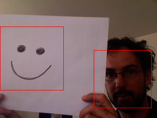

| Name |
detect() |
| Examples |
import hypermedia.video.*;
OpenCV opencv;
void setup() {
size( 320, 240 );
opencv = new OpenCV(this);
opencv.capture( width, height );
opencv.cascade( OpenCV.CASCADE_FRONTALFACE_ALT ); // load the FRONTALFACE description file
}
void draw() {
opencv.read();
image( opencv.image(), 0, 0 );
// detect anything ressembling a FRONTALFACE
Rectangle[] faces = opencv.detect();
// draw detected face area(s)
noFill();
stroke(255,0,0);
for( int i=0; i<faces.length; i++ ) {
rect( faces[i].x, faces[i].y, faces[i].width, faces[i].height );
}
}
|
| Description |
Detect object(s) in the current image depending on the current cascade description.
This method finds rectangular regions in the current image that are likely to contain objects the
cascade has been trained to recognize. It returns found regions as a sequence of rectangles.
The default parameters (scale=1.1, min_neighbors=3, flags=0) are tuned for accurate
(but slow) object detection. For a faster operation on real-time images, the more preferable
settings are: scale=1.2, min_neighbors=2, flags=HAAR_DO_CANNY_PRUNING,
min_size= (for example, ~1/4 to 1/16 of the image area in case of
video conferencing).
Mode of operation flags:
- HAAR_SCALE_IMAGE
-
- for each scale factor used the function will downscale the image rather than "zoom" the feature coordinates in the classifier cascade. Currently, the option can only be used alone, i.e. the flag can not be set together with the others.
- HAAR_DO_CANNY_PRUNING
- If it is set, the function uses Canny edge detector to reject some image regions that contain too few or too much edges and thus can not contain the searched object. The particular threshold values are tuned for face detection and in this case the pruning speeds up the processing.
- HAAR_FIND_BIGGEST_OBJECT
- If it is set, the function finds the largest object (if any) in the image. That is, the output sequence will contain one (or zero) element(s).
- HAAR_DO_ROUGH_SEARCH
- It should be used only when CV_HAAR_FIND_BIGGEST_OBJECT is set and min_neighbors > 0. If the flag is set, the function does not look for candidates of a smaller size as soon as it has found the object (with enough neighbor candidates) at the current scale. Typically, when min_neighbors is fixed, the mode yields less accurate (a bit larger) object rectangle than the regular single-object mode (flags=HAAR_FIND_BIGGEST_OBJECT), but it is much faster, up to an order of magnitude. A greater value of min_neighbors may be specified to improve the accuracy.
Note, that in single-object mode HAAR_DO_CANNY_PRUNING does not improve performance much and can even slow down the processing. |
| Syntax |
detect(scale, min_neighbors, flags, min_width, min_height);
detect();
|
| Parameters |
| scale |
float : The factor by which the search window is scaled between the subsequent scans, for example, 1.1 means increasing window by 10%. |
| min_neighbors |
int : Minimum number (minus 1) of neighbor rectangles that makes up an object. All the groups of a smaller number of rectangles than min_neighbors-1 are rejected. If min_neighbors is 0, the function does not any grouping at all and returns all the detected candidate rectangles, which may be useful if the user wants to apply a customized grouping procedure. |
| flags |
int : Mode of operation. It can be a combination of zero or more of the above flags. |
| min_width |
int : Minimum window size. By default, it is set to the size of samples the classifier has been trained on (~20×20 for face detection). |
| min_height |
int : Minimum window size. By default, it is set to the size of samples the classifier has been trained on (~20×20 for face detection). |
|
| Return |
None |
| Usage |
Application |
| Related |
cascade()
|